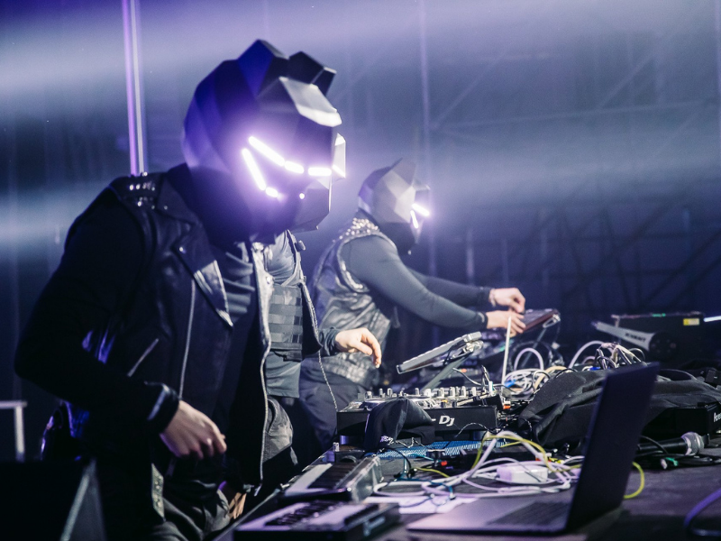

Black Tiger Sex Machine (BTSM) es un grupo musical de origen canadiense que ha alcanzado reconocimiento
por su singular enfoque artístico. Algunas de las características distintivas que definen la identidad
del grupo son las siguientes:
Máscaras y personajes: Los miembros del grupo suelen actuar en el escenario con máscaras de tigre,
creando una imagen distintiva y misteriosa. Cada miembro tiene su propio personaje y máscara, lo que agrega un elemento teatral a sus presentaciones.
Fusión de géneros: BTSM es conocido por su capacidad para fusionar diversos géneros musicales en su trabajo. Incorporan elementos de dubstep,
electro house y música de baile, creando un sonido distintivo y enérgico.
"Church of the Machine" y narrativa: El grupo ha desarrollado una especie de mitología alrededor de su música, a la que se refieren como la "Iglesia de la Máquina"
(Church of the Machine). Este concepto agrega una capa adicional de narrativa y significado a su música y presentaciones.
Producción visual y escenografía: Las presentaciones en vivo de BTSM suelen incluir una producción visual impresionante, con luces, visuales y escenografía que
complementan la experiencia musical. Esto contribuye a crear una atmósfera inmersiva para el público.